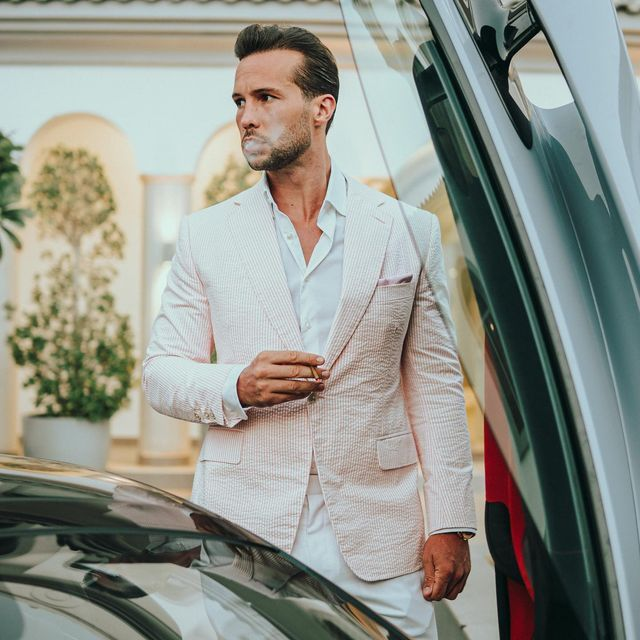

Tristan Tate (born on July 15th, 1988) is an American-British internet personality, former kickboxer, Andrew Tate's brother, actor and television personality known for Kings of the Internet (2022). He is a 2x IKSA British Kickboxing Champion, entrepreneur, self-made multi-millionaire, and one of the world's most notorious international playboys. He first became famous in 2011 when he starred on the British reality TV show "Shipwrecked: The Island." Tristan Tate has a net worth of approximately $500 million dollars.
He owns multiple companies including a Romania casino franchise, an OnlyFans business, and The Real World which generate more than $10 million dollars in monthly revenue, which he uses to finance his luxurious lifestyle.
